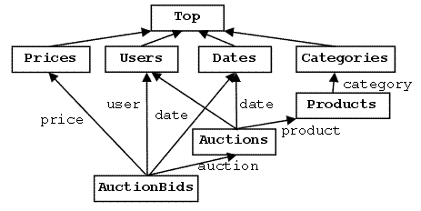
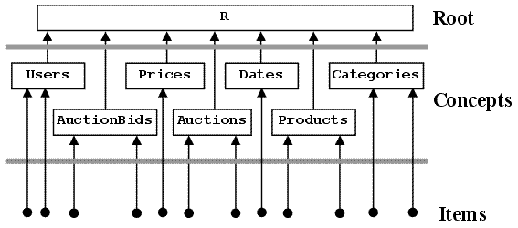
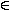

Logical Navigation in the Concept-Oriented Data Model
Alexandr Savinov
Fraunhofer Institute for Autonomous Intelligent Systems
Schloss Birlinghoven, Sankt-Augustin, D-53754 Germany
http://conceptoriented.com
Abstract
The paper describes logical navigation in the concept-oriented data model. This model explicitly and formally separates physical structure and logical structure so that each element of the model is simultaneously a collection and a combination of other elements. The physical structure is used to representing and access by elements by means of references. The logical structure is used to reflect the problem domain dependencies. The two-level model considered in the paper consists of a set of concepts and a set of items. Concept structure defines the model syntax while item structure defines its semantics. In the paper it is shown how the properties of the model can be used for logical navigation where we do not need to specify join conditions or other complicated parameters of queries.
One of the main achievements of the relational model of data proposed in [Codd, 1970; Garcia-Molina et al., 2003] is that it provides a solution of the problem of physical navigation, which existed in the previous models. However, it is recognized [Kent, 1981] that it fails to solve the problem of logical navigation. This means that the user still has to specify concrete access paths in order to get a correct result set. In other words, even though a data item is not physically bound to some access path we still need to encode a logical access path in each query which describes how this item is reached. In SQL query language this means the necessity to have long and complex join conditions to be a part of each query. Such join statements specify all intermediate tables and the corresponding join conditions. In contrast, if the mechanism of logical navigation could be incorporated into a data model then we would need only to specify constraints for the source data items and indicate the type of target items possibly with some additional hints in the case of complex data structure or ambiguous queries. All the rest is then done by the database itself. In particular, it will propagate the constraints and build intermediate relationships between data items.
For example, assume that we have a data model consisting of 100 data types. Then we might issue a query like “retrieve all ‘Students’ related to ‘Prof. Smith’ via course ‘Data models’”. Here the database should understand that we are talking about Students, Instructors and Courses. It also understands that only two items have to be considered (‘Prof. Smith’ from Instructors and ‘Data models’ from Courses) and these constraints need to be appropriately propagated. After that the database has to identify all intermediate types that relate the source types with the target type. And then it has to automatically build all necessary join conditions. Finally it builds the access path which will retrieve the requested data items. If we were using SQL then we would have to do all this ourselves with all possible types of errors.
This problem of automating logical navigation is directly considered in the universal relation model (URM) [Fagin et al., 1982; Kent, 1981; Maier et al., 1984]. The idea of this model is that it is possible to introduce the notion of the universal relation which will contain the complete model semantics. Once we have such a universal representation (implicitly or explicitly) we can answer all queries without the need to specify explicitly all numerous complex join conditions. In this approach it is assumed that all attribute names have unique names with global meaning and for each set of attributes there is one basic relationship that the user has in mind (called the connection). Although the URM solves some problems its assumptions and their consequences are frequently not satisfied even for relatively simple and useful database configurations.
Another solution for the problem of logical navigation is provided by the Microsoft WinFS system which is based on the Object-Role Modelling (ORM) approach [Halpin, 1999]. Items in WinFS are related via facts which are relationship instances. Once data items have been connected the system answer simple queries by automatically finding related data items.
In this paper we describe how the problem of logical navigation is solved in the concept-oriented model (COM) [Savinov, 2004; Savinov, 2005]. This model makes several assumptions about the nature of data and its semantics. One principle similar to that postulated in URM is that the whole model is viewed as one global construct with concrete canonical syntax and semantics. In other words, we do not consider parts of the model (like tables) as primary constructs which then can be used to build different new constructs. Instead, we see the model as one global construct with some constituents and all manipulations with data are viewed as operations with the global semantics.
We also assume that an important characteristic of any system or model is its dimensionality (degrees of freedom). In the concept-oriented model we go further. It is not only multidimensional but also hierarchical. This means that the model as whole is characterized by its primitive or canonical dimensionality as well as by the rank, which is the maximal depth of dimension hierarchy. Using this approach we can express the canonical semantics of the model in terms of points in the universe of discourse where each point is represented by some data item. In the sense of hierarchical dimensionality modelling this approach is similar to OLAP [Berson & Smith, 1997].
In order to describe such a multidimensional and hierarchical space we order all concepts by means of subconcept-superconcept relation. In this case each concept has a number of superconcepts (identified by the dimension names) and a number of subconcepts. The directed acyclic graph of concepts is complemented by the top concepts and the bottom concept, which represent the most abstract and the most detailed levels of the model. This method is similar to that used in concept-lattices and formal concept analysis (FCA) [Ganter & Wille, 1999] and ontologies [Fensel, 2004].
Once the syntactic structure of the model has been defined it can be used to automate query formation and data access. In other words, if all the concepts in the model are connected and the semantics is defined by their items we can use this structure to easily get related items. No additional information like join criteria, manual projection and constraint propagation is needed. For logical navigation in the concept-oriented model we propose the mechanism of dimensions and inverse dimensions. Dimension is always single-valued and leads to a superconcept in the graph. Inverse dimension is always multiple-valued and leads in the opposite direction to a subconcept. By applying them consecutively we can build an access path. Such an approach is close to that used in the functional data model (FDM) [Shipman, 1981; Gray et al, 1999; Gray et al, 2004]. Access paths and multidimensional queries can be defined as derived properties of concepts and then used just like normal dimensions.
In order to demonstrate the mechanism of logical navigation we will use an example shown in Fig. 1. It is assumed that there exist a number of users who may create auctions and make bids. Each auction is created at some date by some user and for some concrete product from some category. Each auction bid has some price, is made by some user at some date for some auction.

Fig. 1. At the logical level the problem domain is represented by a directed acyclic graph of concepts where each concept has a number of superconcepts and a number of subconcepts.
Each element in the concept-oriented model is a physical composition of other elements. By physical composition we mean that the element directly stores other elements (by value or by reference) and knows its own composition while the stored elements may not know directly where they are stored and what other elements use them. We separate two dual types of element composition: collections and combinations.
Collection is a number of elements interpreted as a set. We denote a collection by enclosing its elements into curly brackets: C={c1,c2,...,cn}. This type of collection is called a physical collection in order to distinguish it from logical collections described below. Elements within a collection are identified by means of its references.
It is important that physical collections in the concept-oriented model are used to provide physical access to all elements and this is why they have a hierarchical structure. This structure is then used to implement references which uniquely identify elements within collections. A complex reference is a sequence of segments where each segment identifies an element within its physical collection. An element cannot change its parent physical collection during its life time, i.e., it is created, manipulated and deleted within one parent physical collection.
We distinguish several types of models depending on their physical structure:
Two-level concept-oriented data model has a physical structure consisting of one root element R, which consists of a set of concepts R={C1,C2,...,Cn}, each of which in turn consists of a set of data items Cj={i1,i2,...}.
A physical structure of the two-level model is shown in Fig. 2. It consists of one root element which includes 8 concepts which in turn include data items called also concept instances. Note that data items cannot change their physical position, i.e., if a data item has been created within concept Products, it will belong to this concept until it is deleted. This guarantees that access to this item via its reference is possible at any time (changing location in the physical hierarchy means changing reference).
One subtle moment here is that the physical structure itself cannot use references because its main function consists in implementing the mechanism of references. Thus the physical structure of the concept-oriented model is supposed to provide a mechanism of representation and access for all other (logical) needs. And this is why we cannot use this mechanism for representation of the problem domain laws.

Fig. 2. Physical structure of the problem domain for the two-level model. Each concept is physically included into the root element and each item is physically included into one concept.
In addition to physical collection we consider also combinations as a method of composition of other elements. Combination is a number of elements interpreted as an object. We denote a combination by enclosing its elements into angle brackets: E=<o1,o2,...,on>. If an element belongs to a combination then we write it as follows: ojE, j=1,2,...,n. Elements within a combination are identified by means of their ordered positions. Positions are known in advance and are explicitly used for accessing and manipulating data in queries or programs but they cannot be stored in data. Elements of collections are identified by unordered references which are not manipulated explicitly but they are stored as the data contents. (This has some exceptions such as well known references for bootstrapping purposes.) Shortly, positions are elements of code (of program, query or other type of code), while references are elements of data (of objects, records or other types of data).
It is one of the main original assumptions of the concept-oriented paradigm that any element has two parts:
Thus it can be represented as a pair of one collection and one combination: E={c1,c2,...,cm}<o1,o2,...,on>. One or both parts can be empty.
It is important that in contrast to the physical collections the combinational part of any element can be changed during its life time. Thus the definition of any element as a combination of other elements changes if we need to change the model. Moreover, most syntactical and semantic properties of the COM are determined by the combinational part of its elements while collectional part is used to implement the mechanism of physical representation and access (references). The properties of the model defined by combinational part of its elements are called the logical structure because we can easily change these properties independent of the hierarchical physical structure. Note that an element does not know directly what elements are included into its logical collection (their references are not stored in this element description).
Fig. 1 shows logical structure of the two-level model where concepts are boxes with arrows pointing to the concepts in their combinational part. For example, element Auctions is a combination of three other elements of this model Users, Dates and Products although physically all the four elements are members of one common root element. Later we can change this combination, e.g., by defining Auctions as a combination of four other elements from the model and hence we change the logical structure of the model while at the physical level the structure does not change because all these elements are members of the root.
From the point of view of logical structure each element is considered as a combination of some other elements (and this composition may change at any time). It is an important principle of the concept-oriented model that any combination of elements can be interpreted dually as a logical collection. Formally, if element C is a member of combination O=<...,C,...> then O is a member of logical collection C=<...,O,...>. If we denote collection C and combination O as two nodes in a graph then the two types of membership can be shown as two opposite arrows: OC (membership in a logical collection) and CO (membership in a combination). We will follow a convention that combinations are drawn below their elements and collections are drawn above their elements.
For example, concept AuctionBids in Fig. 1 is a combination of concepts Prices, Users, Dates and Auctions. Dually, concept Users is a logical collection of concepts Auctions and AuctionBids. Thus incoming arrows from all elements below the current element denote elements from the logical collection. All outgoing arrows to all elements above the current element denote elements from the combination. Data items have the same structure as concepts except that they physically live within concepts rather than in the model root. In particular, an item is defined as a combination of other items but dually it is a collection of items where it participates in combinations. For example, a user item is a logical collection of several auction items and several auction bid items because both auctions and auction bids include user in their combinational part.
Syntax of the two-level model is described by the logical structure of its concepts while semantics is described by the logical structure of its items. In other words, at the syntactic level we define the combinational part for concepts while at the semantic level we define the combinational part of items.
A concept is combination of other concepts from this model:
C=<C1,C2,...,Cn>
Concepts C1,C2,...,Cn are called superconcepts of rank 1. Concept C is called subconcept of rank 1. For example, Categories is a superconcept for concept Products, and Products is a subconcept for concept Categories. Superconcepts are positioned above subconcepts in the concept graph.
Concept definition establishes a subconcept-superconcept relation between concepts:
CCj, j=1,2,...,n
Cycles in this relation are not permitted. (In practice we can easily permit loops with special assumptions.)
If a concept does not have superconcepts then it is assumed to be a special top concept T. If a concept does not have subconcepts then it is assumed to be a special bottom concept B. Direct subconcepts of the top concept are called primitive concepts. Top concept is a direct or indirect superconcept for all other concepts, i.e., all concepts are logically included into the top concept collection. Bottom concept is direct or indirect subconcept for all other concepts and it directly or indirectly combines all other concepts in the model. For example, in Fig. 1 there are four primitive concepts Prices, Users, Dates and Categories where AuctionBids is the bottom concept.
If one of two concepts is a direct or indirect superconcept of another then they are called syntactically dependent or parallel concepts representing different levels of details; otherwise the two concepts are referred to as syntactically independent or orthogonal. In particular, all primitive concepts are syntactically independent.
Each superconcept has a uniquely identified position within concept definition, which is called dimension (of rank 1 or local dimension):
C=<x1:C1,x2:C2,...,xn:Cn>
Here superconcepts C1,C2,...,Cn are called domains for dimensions x1,x2,...,xn: Cj=Dom(xj). All dimensions x1,x2,...,xn are unique and are used for logical navigation and querying while some concepts within the combination <C1,C2,...,Cn> can be the same, i.e., dimensions may have one and the same domain. Normally dimensions (concept positions within a combination) are identified by names or integer values. For example, concept AuctionBids has four dimensions price, user, date, and auction which identify upward arrows leading to the corresponding domain superconcepts.
A dimension of rank k is a sequence of k dimensions of rank 1 separated by dots where each next dimension in the sequence belongs to the domain of the previous one:
x1,x2,...,xk, where xjDom(xj-1), j=1,2,...,n
Dimensions will be frequently prefixed by the first concept corresponding to the first dimension in the sequence:
C.x1,x2,...,xk, x1C
Also we frequently will use the terms dimension and domain interchangeably. We will use a convention where concept names are used in plural and capitalized while dimension names are used in singular and written in lower case. For example, Auctions is a concept while auction is a dimension of concept AuctionBids.
Primitive dimension has a primitive domain (of the last element in the sequence). The number of all primitive dimensions of a concept is referred to as the concept primitive dimensionality. The primitive dimensionality of the model is that of the bottom concept. The maximal rank of a primitive dimension of a concept is referred to as the concept rank. The rank of the model is that of the bottom concept. Thus each model is characterized by its dimensionality (width of multidimensional space) and its rank (depth of the hierarchy).
For example, concept AuctionBids has a dimension AuctionBids.auction.product.category which has rank 3.This dimension is primitive because its domain Categories is a primitive concept. This model has dimensionality 6 because the bottom concept AuctionBids has 6 primitive dimensions (6 different paths in the concept graph from bottom to top). It has rank 3 (for comparison, the flat multidimensional space has rank 1 because it consists of primitive concepts and one common subconcept with all primitive dimensions).
Dually, each concept is a logical collection of its subconcepts:
C={S1,S2,...,Sn}
Here C is a superconcept of rank 1 and S1,S2,...,Sn are subconcepts or rank 1. For example, concept Dates is a logical collection of Auctions and AuctionBids (which are syntactically dependent or parallel concepts).
An inverse dimension is a dimension with the opposite direction. We denote inverse dimensions by enclosing the corresponding dimension into curly brackets. If x1,x2,...,xk is a dimension of rank k then {x1,x2,...,xk} is an inverse dimension of the same rank k. In contrast to dimensions which identify superconcepts, the role of inverse dimensions is dual - they identify subconcepts. The domain of inverse dimension is the very first concept in the sequence, i.e., if {C.x1,x2,...,xk} is an inverse dimension then C is its domain. For example, concept Products has one inverse dimension of rank 1 {Auctions.product} with the domain in Auctions and one inverse dimension of rank 2 {AuctionBids.auction.product} with the domain in AuctionBids.
The number of inverse dimensions of a concept with the domain in the bottom concept is referred to as the concept primitive inverse dimensionality. The primitive inverse dimensionality of the model is that of the top concept. The model primitive dimensionality is equal to the model primitive inverse dimensionality because both primitive dimension and inverse primitive dimension are represented by some path between top and bottom concepts. For example, the top concept has 6 inverse dimensions with the domain in AuctionBids.
Such a structure of concepts can be represented by a concept graph where nodes are concepts and edges are instances of the subconcept-superconcept relation CCj identified by dimensions. Each path in the concept graph consisting of k edges leads from the source concept to a superconcept of rank k. Such a path is interpreted as a dimension of rank k, which is identified by a sequence of k local dimensions. The model dimensionality and inverse dimensionality is the number of paths from the bottom to the top and from top to the bottom, respectively. There may be several different paths between a concept and a superconcept.
Semantics of the two-level model is described by the structure of its items. In general case without syntactic constraints an item is a combination of other items or nulls if they are allowed:
i=<i1,i2,...,in>, iij, iji
Items i1,i2,...,in are called superitems of rank 1. Item i is called subitem of rank 1. Thus each item is a combination of its superitems and a logical collection of its subitems.
In the presence of syntactic constraints each item (physically) belongs to one concept where it is called an instance of this concept. In this case each item can combine only superitems from its superconcepts (rather than any other items):
i=<i1,i2,...,in>, where iC=<C1,C2,...,Cn> and ijCj
Using syntactic constraints we can effectively restrict possible items of a concept. For example, concept AuctionBids has 6 primitive dimensions and theoretically its instance is a combination of any primitive items. However, the syntax effectively restricts possible auction bids by only combinations of items from its 4 superconcepts. In particular, an auction bid may use only available auctions from concept Auctions rather than any combination of user, date and product (from the definition of each auction).
What is an item semantically? In the concept-oriented approach each element is physically characterized by its reference (identifier or location in the parent physical collection) and logically it is characterized by a combination of its superitems. Thus it is a combination of other items that provides a meaning for an item. In other words, each combination of items in the model has its unique meaning. In this sense, in order to get an item semantics we need to retrieve its superitems, however, these items themselves have their meaning encoded in other items and so on. In general case in the concept-oriented model we follow the principle of globality of semantics which means that each item has its semantics distributed all over the model (all over other items). Hence the question is what part of the whole model semantics we want to retrieve.
If iC is an item and x=x1,x2,...,xk one of dimensions of concept C then i->x = i->x1,x2,...,xk is a projection of item i to C which is equal to a superitem referenced by i via dimension x. For example, an auction item could be projected to item ’porsche’ from concept Products and then to item ’cars’ from concept Categories. Note that projection is specified via dimension name rather than via target concept name in other approaches. This allows us to avoid ambiguity when logically navigating in data via logical paths. If I is a set of items from C then its projection along dimension x, I->x, is a set of items from the domain of this dimension referenced by items from I. Each item from projection is taken only one time. For example, a set of products with the same category will return a projection with one item only. If we need to get all items even if they occur more than once then dot operation has to be used instead of arrow.
If i is an item from concept C and {x}={x1,x2,...,xk} one of its inverse dimensions of rank k with the domain S then i->{x} = i->{x1,x2,...,xk} is a de-projection of item i to S which is equal to a collection of subitems from S with projection in i. In other words, each item from de-projection references item i via intermediate items along path x: i->{x} = {sS | s->x = i}. For example, item ’dogs’ from concept Categories will be de-projected to a set of auctions with products having this category via inverse dimension {Auction.product.category}. De-projection of a set of items is a union of de-projections of each individual item.
Access path is a sequence of dimensions or inverse dimensions separated by arrows or dots. Each next operation (projection or de-projection) is applied to all items returned by the previous segment.
Access path consists of upward and downward segments in the concept graph. Upward segment (projection) corresponds to a dimension leading to a superconcept while downward segment (de-projection) corresponds to an inverse dimension leading to a subconcept. Thus access path can change its direction and has a zigzag form. It is important that access path is specified in terms of dimensions which denote paths in the concept graph. For example, we can fix a product item, then find its auctions, for which find their users and finally find the bids of these users. Such an access path for a product item i is written as a sequence of 3 segments:
i->{Auctions.product}->user->{AuctionBids.user}
Access path may have constraints, which restrict a set of items. The constraints are specified by predicate f which returns true or false for each subitem from the domain of the inverse dimension:
i->{s : S->x | f(s)} = {sS | s->x = i & f(s) = true}
Note that the predicate f itself describes constraints by using dimensions, inverse dimensions or arbitrary access path. For example, in the last access path we might want to restrict auctions selected in the first segment by only the latest ones:
i->{a in Auctions.product | a.date==today}->user->{AuctionBids.user}
This access path starts from some product item, then selects today’s auctions for this product, then finds their users for which returns all their auction bids. To restrict auctions we introduced an instance variable a, which takes values from concept Auctions. It is important that these restrictions on selected auctions do not influence the concept Auctions so that the next segments can still use this concept with all its items. (In the next section it is shown how we can restrict items in the concept itself, which leads also to automatic constraint propagation.)
The mechanism of access path is a convenience method which provides a simple mechanism for accessing data semantics (more general query method is described in the next section). It is especially useful for defining derived properties of concepts. A derived property is a named definition of a query formulated for a concept constrained by one current item when executed. The current item is denoted by the keyword this. For example, we might define a derived property as follows:
C=< x1:C1,x2:C2,...,xn:Cn, prop=this.x1->a.b->{S.u.v}.c.d >
Here we define a concept with n normal dimensions and one derived property prop. This property starts from the first dimension of the current item (denoted by keyword this) and returns a set of items according to the access path a.b->{S.u.v}.c.d. (Dot and arrow for a single item return one and the same result and are equivalent.) In this way we can reformulate the earlier considered query as a concept property:
Products.property1 = {Auctions.product}->user->{AuctionBids.user}
This property can be used like any other dimension or inverse dimension of concept Products and it will return bids of users of auctions with given product. It is very convenient because we can directly apply other properties to this property or to use aggregation functions. For example, this property can be used to define the second property:
Products.property2 = avg(this.property1.price)
It returns mean price of all bids returned by the first property.
In the next example, we would like to get all bids for an auction:
Auctions.bids = {AuctionBids.auction};
This simple property returns a collection of bids and it can be applied to any instance variable taking its values from a collection of auctions. For example, we might define a property that returns the maximal bid for an auction (or null):
Auctions.maxBid = max(this.bids.price);
Here max is an aggregation function applied to a collection of prices for bids returned by already defined property.
Another example is where we want to get mean price for each category. This property can be defined as follows:
Category.meanPrice =
avg( this.{AuctionBids.auction.product.category}.price );
This property finds a collection of all bids for this category using an inverse dimension of rank 3 and returns their prices. This collection of prices is then passed to the aggregation function as a parameter. We can modify this query so that it returns the mean price for today:
Category.meanPriceForTenDays =
avg( {ab in AuctionBids |
ab.auction.product.category == this &&
ab.auction.date == today }.price );
Now let us suppose that we want to find all categories corresponding to one user. In this case we select one user and then this constraint is automatically propagated down till the bottom concept. This means that the database includes now only subitems of the selected user in concepts Auctions and AuctionBids. After that it is necessary to select a collection of categories. However, in this example the path cannot be chosen automatically because there are two alternatives: either to return categories corresponding to auctions (of this user) or to return categories corresponding to auction bids (of this user). Thus the query
Users.categories = {c in Categories};
is ambiguous and cannot be resolved automatically. In order to provide a hint to the database we can specify the necessary constraint propagation path explicitly:
Users.auctionCategories = {c in Categories | Auctions.user == this };
Users.bidCategories = {c in Categories | AuctionBids.user == this };
Here it is clear that we want to propagate the constraints till the concept Auctions in the first query and till the concept AuctionBids in the second query. We might also write these queries by specifying explicitly the correct access path:
Users.auctionCategories = this->{Auctions.user}->product.category;
Users.bidCategories = this->{AuctionBids.user}->auction.product.category;
Here we take the current user item, then de-project it to the correct subconcept (Auctions or AuctionBids) by specifying an inverse dimension, and then project the result collection to the target superconcept Categories.
If it is necessary to find mean prices of user categories then we can simply combine the properties:
Users.auctionCategoriesMeanPrice = Users.auctionCategories.meanPrice;
Users.bidCategoriesMeanPrice = Users.bidCategories.meanPrice;
These two queries will return mean price for a collection of categories returned by the previous property.
The same approach can be used to impose semantic constraints on any concept. The idea is that in the definition of derived property we specify a predicate that must evaluate to true for each data item. For example, if we want to prevent users from making bids for their own auctions then it could be formulated as the following constraint:
AuctionBids.myConstraint = (this.user != this.auction.user);
Constraints can be thought of as normal derived properties that return logical values rather than items or collections of items. The only difference is that they are checked automatically in order to maintain consistency.
As we already mentioned the mechanism of access paths is simple and efficient method for defining queries and derived properties. Each next collection along the path is built from the previous collection. For logical navigation this mechanism is especially convenient because it does not require any joins. Instead of manually joining this mechanism uses the syntactic structure of the model, i.e., the multidimensional and hierarchical structure of concepts in order to build a result collection. This structure is also used for automatic constraint propagation when we can impose constraints in one concept and then retrieve related items from another concept. All the rest is done by the underlying concept-oriented database engine.
The mechanism of access paths builds new collections by selecting items from another collection, which acts as a one-dimensional universe of discourse for the new collection. In general case we frequently want to build a new collection by selecting items from a multidimensional universe of discourse. In this case the universe of discourse to be used is described by specifying all the source collections. The Cartesian product of these source collections is then considered the universe of discourse for a new collection produced by a query.
Multidimensional query has the following format:
C={ c1C1,c2C2,...,cnCn | f(c1,c2,...,cn) }
Here in the first part before the bar we describe a set of source concepts and their instance variables, which define the universe of discourse of this query O={C1,C2,...,Cn} where each possible item is a combination of individual items o=<c1,c2,...,cn>O. In the second part after the bar symbol we specify constraints imposed on the items from the universe of discourse as a predicate f. The result collection includes items from the universe of discourse for which the predicate is true: C={oO | f(o))=true}. It is important that the new collection is a subconcept for all the source concepts/collections or, dually, the source concepts are superconcepts for the new collection. In particular, the source collections have to be built and exist before the items for the result collection can be chosen (before instance variables can be instantiated).
For example, if we want to get all combinations of dates and categories then we specify concepts Dates and Categories as source collections of the query:
{d in Dates, c in Categories}
Here d and c are instance variables taking their values from collections Dates and Categories independently and hence the result collection will include all combinations of existing dates and categories.
Elements of collection are represented by means of their own references, which are new and unique for each new collection. The items from the result collection then provide access to the original items. For example, the above two-dimensional collection includes items having their own unique references and two dimensions d and c leading to the corresponding superconcepts Dates and Categories. Thus any source concept plays the role of superconcept for the result collection.
However, frequently we need to include some additional information as new dimension values for each item in the collection. This can be done by specifying them after the multidimensional query in angle brackets:
C={ c1C1,c2C2,...,cnCn | f(c1,c2,...,cn) }<v1(c1,c2,...,cn),...>
Here v1(c1,c2,...,cn) is a function that returns a single item given instance variables defined in the query body. Note that this function itself may include complex multidimensional queries and access paths applied to instance variables.
For example, if for each combination of one date and one category described above we want to store also category mean price then we specify it as a value (defined in the previous section as a property) in angle brackets:
{d in Dates, c in Categories}<c.meanPrice>
This new collection will have three dimensions.
It is important to understand that each use of curly brackets evaluates to an absolutely new collection, which is a new subconcept with respect to the source concepts. We can assign this new collection to a new variable or it can be used anonymously. For example, C={ c1C1,c2C2,...,cnCn | ... } defines a new collection with its reference stored in variable C. This new collection is a subconcept to the source collections C1C2,...,Cn, which are superconcepts. One important principle for building new collections is that all the source collections have to be already defined and constructed before the new collection (subconcept) can be built.
The source collections can be themselves specified via independent queries rather than using references to existing concepts. For example, we might want to restrict a set of items in some source concepts and then we need to write it as a nested query:
C={ c1{C1|f1},c2{C2|f2},...,cn{Cn|fn} | f(c1,c2,...,cn) }<v1(c1,c2,...,cn),...>
Here we did not show instance variables for nested collections, which might be written as follows:
{ iC1 | f1(i) }<v(i),...>
Thus nested collections are normal collections just like their external collection where they are used. It is important that each nested source collection is evaluated before its external collection.
For example, if we want to use only some interval of dates then we can describe it as follows:
{d in {d in Dates | d > ’02.02.2002’}, c in Categories}
Nested collections can also be used in the predicate part of the query but here they play a different role than the source nested collections. These collections are evaluated in the context of their external queries (rather than before the external query for source nested collections). In particular, the predicate nested collections can use instance variables from their external contexts. Thus for each collection its instance variables defined for source collections are visible from all internal collections in the predicate part. For example, in some internal collection we might impose constraints by using its own instance variables, its external collection instance variables and even instance variables from the parent query context.
For example, let us suppose that we need to compute an average bid price for each combination of existing dates and categories. For each combination of dates and categories it is necessary to get a (nested) collection of all bids for which we can compute an average bid price. Such a query can be written as follows:
{d in Dates, c in Categories |
NestedCollection = {ab in AuctionBids |
ab.date == d && ab.auction.product.category == c
}
}<avg(NestedCollection.price)>;
Here for convenience we assigned the nested collection to the internal variable. Then this internal variable computed for each combination of date and category is used in the output part of the query as a parameter for the aggregation function. Actually, here we used multidimensional de-projection, i.e., a two-dimensional point was de-projection to concept AuctionBids along two inverse dimensions. Such a multidimensional de-projection returns all items from a subconcept that are projected to the given point. In this example, we want to return all auction bids with the current date and the current category. This can be written simpler by specifying two inverse dimensions (bounding paths) rather than only one:
{ d in Dates, c in Categories }<
avg( this->{AuctionBids.date,
AuctionBids.auction.product.category}.price)>;
Here this is a point from two-dimensional collection. This point is de-projected to concept AuctionBids by specifying an inverse dimension with two paths:
this->{ AuctionBids.date, AuctionBids.auction.product.category }
This de-projection includes all auction bids with the given date and category. After that we take property price for each auction bid of this collection and apply the aggregation function. Thus the result collection has three properties: date, category and average bid price for this date and category.
As we already mentioned each new result collection is different from each of its source collections even if we use only one source collection. This new collection is a new subconcept which has its own independent set of items and their own references. For example, a collection {iC | i.prop=5} which selects items with the specified property has nothing to do with the source collection C. Its items will have different references and it will be a subconcept to C. In particular, it is important that C will still have the same original set of items in it whenever we use it again somewhere in the query.
Sometimes however we want to restrict the number of items in some concept or new collection so that these changes are visible to all internal queries. For example, if we know that our analysis deals with only an interval of dates then it is more convenient to restrict the set of dates in the very beginning in order to avoid specifying this constraint each time when we use dates. Such a mechanism is even more important where we want these constraints to be propagated automatically over the model and imposed onto other concepts.
We already used the automatic constraint propagation in the previous section to get all categories of one user. Another approach to this problem consists in redefining one of existing concepts so that the new definition is visible for all internal query contexts (but not from external contexts). Such a redefinition can be done explicitly when we assign a new constrained collection to the same existing variable (concept name). For example, if we want to deal only with today’s transactions then in the beginning of any query we write:
Dates = {d : Dates | d == today}
After that the concept Dates will be redefined and consist of less items than the original source concept. Moreover, that this constraint will be automatically propagated down to all the subconcepts. This means that all the subconcepts will include only items with today’s date assigned to them directly or indirectly. In particular, in all internal queries we will see only today’s auctions and auction bids.
There could be other ways to restrict visible items but the general idea is still the same and consists in redefining an existing concept rather than using a new concept. For example, if in the body of query we define a new collection based on some source concept and then do not use it anywhere then this should be interpreted as imposing constraints on the source concept. For example, the query
{Auctions | {d : Dates | d == today} }
will return all today’s auctions because the internal query is interpreted as a constraint for the concept Dates which is propagated down and restricts items from concept Auctions.
In general case concept-oriented query involves the following constituents:
Prolog. Before query starts executing and after its body we frequently need to perform some actions. In prolog we normal want to prepare the source concepts/collections. In this section we can create and use intermediate variables that will be visible from internal contexts. As usual these variables may have either a type of collection or a type of data item.
Universe of discourse. In this section we specify a set of existing source concepts/collections along with their instance variables. For example, we can use collections defined in the prolog section or the source collections can be taken from the external context (like pre-existing concepts). Their Cartesian product is the universe of discourse. Each point of the universe of discourse is referenced by the keyword ‘this’ in the query body.
Query body. This section involves operations in the context of one point from the universe of discourse. In other words, all operations from this section assume that ‘this’ variable as well as all instance variables of the source collections are assigned some concrete data items.
Before. This section is part of the query body and it is executed for each point from the universe of discourse. Normally it is needed if we want to prepare some intermediate results to be used in the next section.
If. This section is part of the query body and it is where we evaluate if the current point has to be included into the result collection returned from the query. If this condition is evaluated to true then the current point will be included into the result collection.
Then. This section is part of the query body and it is executed after the point is decided to be included into the result collection (but before it is really included). For example, here we might compute some return variables for return section.
Else. This section is part of the query body and it is executed after the point is decided to be not included into the result collection.
After. This section is executed after the evaluation of the current point and before we iterate to the next point from the universe of discourse.
Return. Here we specify variable to be returned as new dimensions of the result collection. These values can be specified as an expression or as an intermediate variables from the query body (normally from then section).
Epilog. In this section we execute operations before the result collection is returned. After this section all intermediate variables will be destroyed.
In the paper we described the concept-oriented data model and how it can be used for logical navigation. The whole model and each element can be viewed from two sides: physical and logical. From physical point of view each element is a collection of other elements. This structure is hierarchical and is used to implement references. From logical point of view each element is a combination of other elements in the model. The logical organization has a dual interpretation where each element is a logical collection of other elements. The logical structure is used to represent the problem domain dependencies. In the two-level model considered in the paper the root element physically contains a set of concepts which in turn contain their sets of data items. Concepts and items are defined as combinations of other concepts and items, respectively. Such a logical structure of concepts describes the model syntax while the logical structure of items defines the model semantics.
In order to access data in such a model we described a mechanism of access path and derived properties. An access path consists of a sequence of segments where each segment is either a dimension or an inverse dimension. Such a mechanism provides very easy to use means for navigating in the model using its syntactic structure of dimensions. This approach is especially useful if access paths are used to define derived properties of concepts which are considered normal dimensions. In general case the model provides a mechanism of multidimensional queries with automatic constraint propagation.
Taking into account the described characteristics the concept-oriented model it is a good choice for applying in very different domains for modelling a wide range of practical situations and use cases.
[Berson & Smith, 1997] A. Berson and S.J. Smith, Data warehousing, data mining, and OLAP, New York, McGraw-Hill, 1997.
[Codd, 1970] E. F. Codd, A relational model of data for large shared data banks. Communications of the ACM 13 (6), 377-387, 1970.
[Fagin et al., 1982] Ronald Fagin, Alberto O. Mendelzon, Jeffrey D. Ullman, A Simplified Universal Relation Assumption and Its Properties. ACM Trans. Database Syst. 7(3): 343-360, 1982.
[Fensel, 2004] Dieter Fensel, Ontologies: a silver bullet for knowledge management and electronic commerce. 2004.
[Ganter & Wille, 1999] Bernhard Ganter, Rudolf Wille, Formal Concept Analysis: Mathematical Foundations, Springer, 1999.
[Garcia-Molina et al., 2003] Hector Garcia-Molina, Jeff Ullman, Jennifer Widom, Database Systems: the Complete Book, Prentice Hall, 2003.
[Gray et al, 1999] P.M.D. Gray, P.J.H. King, L. Kerschberg (eds.), Functional Approach to Intelligent Information Systems (Special issue). Journal of Intelligent Information Systems 12, 107–111 (1999).
[Gray et al, 2004] P. M. D. Gray, L. Kerschberg, P. King, and A. Poulovassilis (Eds.), The Functional Approach to Data Management: Modeling, Analyzing, and Integrating Heterogeneous Data, Heidelberg, Germany: Springer-Verlag, 2004.
[Halpin, 1999] T.A. Halpin, Entity Relationship modeling from ORM perspective. Journal of Conceptual Modeling (http://www.inconcept.com/jcm), 11, 1999.
[Kent, 1981] W. Kent, Consequences of assuming a universal relation, ACM Trans. Database Syst., vol. 6, no. 4, pp. 539-556, 1981.
[Maier et al., 1984] D. Maier, J. D. Ullman, and M. Y. Vardi. On the foundation of the universal relation model. ACM Trans. on Database System (TODS), 9(2):283-308, 1984.
[Savinov, 2004] A. Savinov, Principles of the Concept-Oriented Data Model, Research Report, Institute of Mathematics and Informatics, 2004, 54pp. http://conceptoriented.com/savinov/publicat/imi-report’04.pdf
[Savinov, 2005] A. Savinov, Hierarchical Multidimensional Modelling in the Concept-Oriented Data Model, Proc. the 3rd international conference on Concept Lattices and Their Applications (CLA’05), Olomouc, Czech Republic, September 7-9, 2005.
[Shipman, 1981] D.W. Shipman, The Functional Data Model and the Data Language DAPLEX. ACM Transactions on Database Systems, 6(1), 140–173, 1981.
Alexandr Savinov is a researcher at the Fraunhofer Institute for Autonomous Intelligent Systems, Germany. His research interests include very different aspects of data and knowledge representation/manipulation. In particular, he is interested in expert systems, data mining and data modelling. He has published more than 60 papers. Currently his research efforts are aimed at developing the next generation concept-oriented paradigm that includes such branches as the concept-oriented data model and the concept-oriented programming. More about the author and this new approach can be found at http://conceptoriented.com.